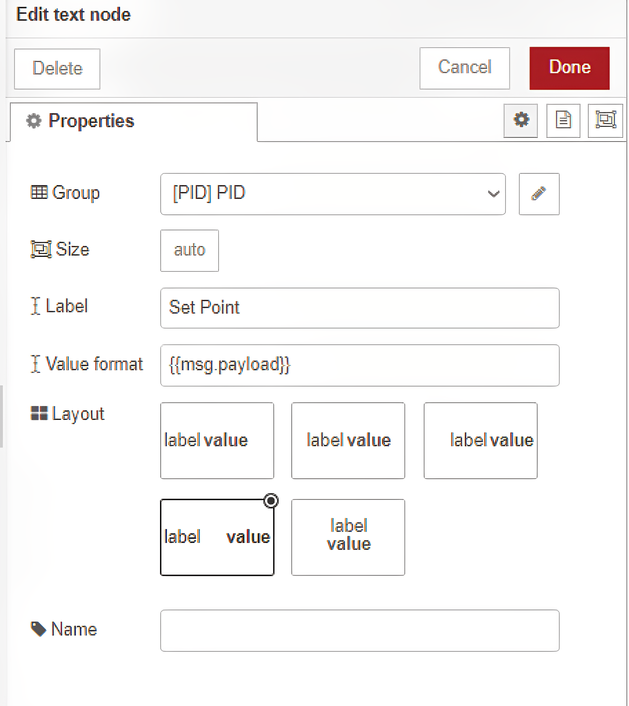

Arduino IDE
Melalui Arduino IDE kita dapat membuat, memprogram dan mengupload kode ke board mikrokontroller (Board arduino, ESP8266, ESP32 dll). Perlu diketahui ya, bahasa pemrograman yang digunakan disini berbasis C/C++. Namun tidak perlu khawatir, arduino menyediakan open source library yang memudahkan pemula untuk menggunakannya.

Mau tau cara installnya?
Caranya cukup mudah, yaitu download filenya lalu install, selesai.
Kunjungi website resminya: https://www.arduino.cc/en/software
Download versi Arduino IDE sesuai yang kamu bisa, boleh Versi 1.18.19 atau Versi 2.0.4 tapi rekomendasi gunakan versi 1 karena untuk saat ini lebih stabil. Tapi kalau kamu suka yang lebih advanced, it's okay pilih yang Versi 2 karena buat kedepannya prospeknya lebih sering digunakan. Lalu install.
Done, Arduino IDE berhasil terinstall. Salam luar biasa!
Setting board dan library
Untuk keperluan kuliah FI-3271, diperlukan setting preferences dan download beberapa library.
Setting preferences
Buka arduino, pilih File → Preferences. Lalu pada bagian Additional Boards Manager URLs pastekan kode berikut.
http://arduino.esp8266.com/stable/package_esp8266com_index.json
https://raw.githubusercontent.com/espressif/arduino-esp32/gh-pages/package_esp32_index.json
https://dl.espressif.com/dl/package_esp32_index.json
Atur boards manager
Pada menu arduino, pilih Tools → Board → Boards manager. Masukkan keyword "esp8266", lalu install board ESP8266 kemudian masukkan keyword "esp32" dan install board ESP32.
Download library
Pada menu arduino, pilih Tools → Manage libraries. Kemudian cari dan install library yang diperlukan. Berikut adalah list library yang diperlukan untuk kuliah FI-3271.
PubSubClient → Client library untuk komunikasi MQTT, dengan skema publish dan subscribe.
DFRobot_DHT11 → Digunakan untuk membaca data Temperature dan Humidity dari sensor DHT11.
MovingAverage → Library yang digunakan untuk memfilter data dengan mengambil rata-rata dari nilai-nilai data yang terakhir.
Library yang disebutkan di atas hanya contoh saja, pada problem yang mau diselesaikan cari library yang sesuai dengan board, mikrokontroller, dan sensor-sensor yang kamu gunakan. Untuk membuka contoh kode dari library, pilih File → Example, kemudian cari contoh kode yang diinginkan. Nah, untuk lebih jelasnya lihat contoh kode basic membaca sensor DHT11 berikut!
#include <DFRobot_DHT11.h> // include atau import library DFRobot_DHT11.h
DFRobot_DHT11 DHT; // deklarasi objek DHT dari class DFRobot_DHT11
#define DHT11_PIN 10 // mendefinisikan pin 10 sebagai pin yang terhubung dengan sensor DHT11
void setup(){
Serial.begin(115200); // memulai komunikasi Serial dengan baud rate 115200
}
void loop(){
DHT.read(DHT11_PIN); // membaca data suhu dan kelembaban dari sensor DHT11 pada pin 10
Serial.print("temp:"); // menampilkan tulisan "temp:" pada Serial Monitor
Serial.print(DHT.temperature); // menampilkan nilai suhu pada Serial Monitor
Serial.print(" humi:"); // menampilkan tulisan "humi:" pada Serial Monitor
Serial.println(DHT.humidity); // menampilkan nilai kelembaban pada Serial Monitor, diikuti dengan enter
delay(1000); // menunda eksekusi program selama 1 detik
}
Raspberry Pi
Dengan Raspberry Pi kita dapat membangun server jaringan, membuat robot, membangun kamera pemantau, atau bahkan membangun server web. Jadi bisa dikatakan Raspberry Pi sebagai komputer mini. Raspberry Pi juga bisa dihubungkan dengan berbagai jenis sensor atau modul, sehingga memungkinkan kamu untuk membuat proyek-proyek yang lebih kompleks dan interaktif.
Install Raspberry Pi OS ke SD Card
Untuk menggunakan Raspberry diperlukan SD Card yang sudah ditanam Operating System (OS) Raspberry Pi, caranya ikuti dibawah ini ya.
Download & install Raspberry Pi Imager: https://www.raspberrypi.com/software/
Buka aplikasi Raspberry Pi Imager & masukkan SD Card (Pakai SD Card Reader) ke laptop.
Pilih versi Raspberry Pi OS yang ingin kamu install dan pastikan SD Card telah terdeteksi. Saran, untuk keperluan kuliah FI-3271 gunakan Raspberry Pi OS 64 bit No Dekstop Environment agar beban RAM Raspberry menjadi lebih ringan.
Atur konfigurasi dengan klik tombol pengaturan.
Sesuaikan konfigurasi seperti pada gambar di bawah, atur username & password dan atur juga SSID hotspot yang akan digunakan. jangan lupa klik Save.
Mulai proses instalasi dengan mengklik tombol "Write" dan tunggu hingga selesai.
Setelah selesai, keluarkan SD Card dan masukkan ke Raspberry Pi. Yeay! Raspberry siap digunakan.
Akses Raspberry Pi via SSH
Dengan menggunakan SSH, kamu dapat mengendalikan komputer (dalam hal ini raspberry pi) yang terletak di tempat yang berbeda dengan cara mengirimkan perintah melalui koneksi internet secara aman dan terenkripsi.
Pastikan Raspberry terhubung dengan power supply
Buka Command Prompt (CMD) dan pastikan laptop maupun Raspberry terhubung dalam satu jaringan internet yang sama.
Untuk akses via SSH dapat dilakukan dengan perintah "ssh <username>@<hostname/ip>".
Ada banyak cara untuk mengetahui IP dari suatu Raspberry. Salah satunya dengan menggunakan aplikasi Advanced IP Scanner. Silahkan download aplikasinya dengan link ini https://download.radmin.com/download/files/Radmin_3.5.2.1_EN.zip. lalu install, dan buka aplikasinya.
Gambar diatas adalah tampilan awal aplikasi Advanced IP Scanner, ganti IP yang ditunjukan pada gambar dengan IP laptop kamu. Cara untuk mengetahui IP laptop, yaitu dengan ketikkan "ipconfig" di CMD.
Copy dan pastekan IP tersebut ke Advanced IP Scanner. Ganti range IP-nya menjadi 1-255, misal IP laptop kamu "192.168.8.18" maka yang kamu ubah menjadi "192.168.8.1-255". Sehingga range IP yang terbaca di Advanced IP Scanner mulai dari 192.168.8.1 sampai 192.168.8.255
Setelah itu, copy IP Raspberry yang terscan di IP Scanner tadi dan ketikkan "ssh <username>@<hostname/ip>" di CMD. Lalu kamu akan diminta key Authentication, ketik saja "y" dan tekan enter. Kemudian masukkan password Raspberry kamu, dan selamat kamu berhasil akses Raspberry via SSH.
Ketika pertama kali akses Raspberry, perlu dilakukan update dan upgrade pada Raspberry. Ketikkan perintah berikut untuk update dan upgrade Raspberry.
ssh pi@192.168.8.18
sudo apt-get update
sudo apt-get upgrade
InfluxDB
Secara umum, InfluxDB merupakan sebuah database open source yang dikhususkan untuk menangani data time series, yang mana data tersebut diurutkan berdasarkan urutan waktu tertentu. Sehingga dengan InfluxDB kita dapat menyimpan data-data sensor dari Mikrokontroller (ESP-8266, ESP-32, dll) melalui server.

Install InfluxDB v1.8 ke Raspberry Pi
Untuk keperluan kuliah FI-3271, InfluxDB akan diinstall di Raspberry Pi dan berjalan secara service (autorun ketika booting) di Raspberry Pi. Untuk proses instalasinya, ikuti cara dibawah ini atau untuk lebih advanced-nya bisa langsung kunjungi di website resminya, yaitu https://docs.influxdata.com/influxdb/v1.8/introduction/install/.
Pertama, pastikan Raspberry Pi nyala dan terhubung dengan jaringan internet yang sama dengan laptop.
Lalu, akses Raspberry Pi via SSH seperti cara sebelumnya.
Kemudian, update dan upgrade Raspberry Pi dengan perintah berikut.
Lalu tambahkan repositori InfluxData dengan perintah berikut.
Kemudian install InfluxDB dengan perintah berikut.
Unmask atau aktifkan layanan InfluxDb dengan perintah berikut.
Mulai layanan InfluxDB dengan perintah berikut.
sudo apt-get update && sudo apt-get upgrade
# influxdata-archive_compat.key GPG Fingerprint: 9D539D90D3328DC7D6C8D3B9D8FF8E1F7DF8B07E
wget -q https://repos.influxdata.com/influxdata-archive_compat.key
echo '393e8779c89ac8d958f81f942f9ad7fb82a25e133faddaf92e15b16e6ac9ce4c influxdata-archive_compat.key' | sha256sum -c && cat influxdata-archive_compat.key | gpg --dearmor | sudo tee /etc/apt/trusted.gpg.d/influxdata-archive_compat.gpg > /dev/null
echo 'deb [signed-by=/etc/apt/trusted.gpg.d/influxdata-archive_compat.gpg] https://repos.influxdata.com/debian stable main' | sudo tee /etc/apt/sources.list.d/influxdata.list
sudo apt-get update && sudo apt-get install influxdb
sudo systemctl unmask influxdb.service
sudo systemctl start influxdb
Akses CommandLine (CLI) InfluxDB
Agar bisa digunakan, perlu membuat user dan database di InfluxDB via CLI InlfuxDB. Untuk prosesnya bisa ikuti cara dibawah ini atau untuk lebih advanced-nya bisa langsung kunjungi di website resminya, yaitu https://docs.influxdata.com/influxdb/v1.8/introduction/get-started/.
Langkah awal untuk masuk ke CommandLine (CLI) InfluxDB adalah dengan ketik "influx" di terminal Raspberry Pi. Maka akan muncul teks berikut yang menunjukkan bahwa kamu sudah masuk ke akses CLI InfluxDB.
Lalu, buat user untuk InfluxDB dengan perintah berikut.
Kemudian, membuat database dengan perintah berikut.
Beberapa contoh query yang sering digunakan
CREATE USER <user> WITH PASSWORD '<password>' WITH ALL PRIVILEGES
CREATE USER labelka WITH PASSWORD 'labelka123' WITH ALL PRIVILEGES
CREATE DATABASE <namadatabase>
CREATE DATABASE sensor;
#menampilkan user
SHOW USERS
#menampilkan database
SHOW DATABASES
#menggunakan database
USE <namadatabase>
#menampilkan tabel sesuai database yang digunakan
SHOW MEASUREMENTS
#menampilkan semua data pada suatu tabel (measurement)
SELECT * FROM <namatabel>
Node-RED
Node-RED adalah sebuah platform visual programming yang digunakan untuk menghubungkan dan mengotomatisasi berbagai macam perangkat dan layanan internet, seperti sensor, database, API, dan perangkat IoT (Internet of Things) lainnya. Node-RED memiliki tampilan antarmuka berbasis web yang memungkinkan kamu untuk membuat alur kerja (flow) secara visual menggunakan blok-blok grafis yang disebut "node".

Install Node-RED di Raspberry Pi
Untuk keperluan kuliah FI-3271, Node-RED akan diinstall Raspberry dan berjalan untuk menghubungkan dan mengontrol berbagai macam perangkat dan layanan internet yang terhubung dengan Raspberry Pi, seperti sensor, kamera, layanan web, dan sebagainya. Untuk prosesnya bisa ikuti cara dibawah ini atau untuk lebih advanced-nya bisa langsung kunjungi di website resminya, yaitu https://nodered.org/docs/getting-started/raspberrypi.
Pertama, jangan lupa untuk update dan upgrade Raspberry Pi.
Kemudian, install Node-RED dengan perintah berikut.
Enable Node-RED running sebagai service di Raspberry Pi.
Mulai layanan Node-RED berjalan di Raspberry
sudo apt-get update && sudo apt-get upgrade
bash <(curl -sL https://raw.githubusercontent.com/node-red/linux-installers/master/deb/update-nodejs-and-nodered)
sudo systemctl enable nodered.service
sudo systemctl start nodered.service
Running Node-RED
Ketika service Node-RED sudah berjalan, maka dapat digunakan browser untuk mengakses Node-RED.
Secara umum Node-RED dapat diakses dengan link "http://<hostname/ip>:1880".
Untuk kuliah FI-3271 ada beberapa Palette (library) yang digunakan, berikut adalah cara installnya. Pilih Menu → Manage palette. Kemudian cari palette yang mau diinstall.
Kemudian cari palette yang mau diinstall.
List palette (library) yang sering digunakan.
http://<hostname/ip>:1880
1. node-red-contrib-influxdb #untuk akses influxdb
2. dashboard-evi #untuk ui dashboard
3. node-red-contrib-pid-controller #untuk controll pid
Latihan
Pada pertemuan yang sudah dilalui, diberikan latihan terkait bagaimana caranya kontrol ON-OFF relay menggunakan dua mikrokontroller yang satu mengirim data sensor ke Node-RED dan yang satunya lagi menerima data sensor dari Node-RED. Lalu berdasarkan nilai data sensor yang diterima menjadi parameter suatu relay ON atau OFF. Berikut adalah gambar skema rangkaian tersebut.
Rangkaian Sender (Pengirim data sensor)
Pada rangkaian Sender, pada gambar ditunjukkan oleh ESP-8266 sebelah kiri yang terhubung dengan potensiometer.
Susunan rangkaian sender adalah sebagai berikut.
Kode Arduino untuk mengirim data sensor (Potensiometer).
3V3-ESP8266 terhubung dengan VCC-Potensiometer
GND-ESP8266 terhubung dengan GND-Potensiometer
A0-ESP8266 terhubung dengan OUTPUT-Potensiometer
#include <ESP8266WiFi.h>
#include <PubSubClient.h>
#include "MovingAverage.h"
const char* ssid = "labelka";
const char* password = "labelka123";
const char* mqtt_server = "test.mosquitto.org"; //set broker mqtt pada mosquitto
WiFiClient espClient;
PubSubClient client(espClient);
MovingAverage <uint16_t, 5> filter; //membuat objek moving average dengan 5 data
#define MSG_BUFFER_SIZE (50)
#define POT A0 //mendefinisikan pin A0 sebagai pin Potensiometer
unsigned long lastMsg = 0;
char msg[MSG_BUFFER_SIZE];
int value = 0;
void setup_wifi() { //melakukan koneksi ke wifi
delay(10);
Serial.println();
Serial.print("Connecting to ");
Serial.println(ssid);
WiFi.mode(WIFI_STA);
WiFi.begin(ssid, password);
while (WiFi.status() != WL_CONNECTED) {
delay(500);
Serial.print(".");
}
randomSeed(micros());
Serial.println("");
Serial.println("WiFi connected");
Serial.println("IP address: ");
Serial.println(WiFi.localIP());
}
void callback(char* topic, byte* payload, unsigned int length) {
Serial.print("Message arrived ["); //menampilkan pesan yang diterima
Serial.print(topic);
Serial.print("] ");
for (int i = 0; i < length; i++) {
Serial.print((char)payload[i]);
}
Serial.println();
if ((char)payload[0] == '1') {
digitalWrite(BUILTIN_LED, LOW);
} else {
digitalWrite(BUILTIN_LED, HIGH);
}
}
void reconnect() {
while (!client.connected()) {
Serial.print("Attempting MQTT connection...");
String clientId = "ESP8266Client-";
clientId += String(random(0xffff), HEX);
if (client.connect(clientId.c_str())) {
Serial.println("connected");
client.publish("nodered-elka", "Dah tersambung nih..."); //mengirim pesan "terkoneksi" dengan topik "nodered-elka"
client.subscribe("sender-elka"); //subscribe ke topik "sender-elka"
} else {
Serial.print("failed, rc=");
Serial.print(client.state());
Serial.println(" try again in 5 seconds");
delay(5000);
}
}
}
void setup() {
pinMode(BUILTIN_LED, OUTPUT);
pinMode(POT, INPUT);
Serial.begin(115200);
setup_wifi();
client.setServer(mqtt_server, 1883);
client.setCallback(callback);
}
void loop() {
if (!client.connected()) {
reconnect();
}
client.loop();
unsigned long now = millis();
if (now - lastMsg > 5000) {
lastMsg = now;
filter.add(analogRead(POT)); //memberikan filter moving average ke data sensor
unsigned long potValue = filter.get(); //mengambil data sensor yang sudah difilter
potValue = map(potValue,0,1024,0,255); //mapping nilai potValue dari rentang 0-1024 menjadi rentang 0-255
String strPot = String(potValue); //merubah type data menjadi string
Serial.println("Potensio Value: ");
Serial.println(strPot.c_str());
client.publish("nodered-elka", strPot.c_str()); //mengirim data sensor ke topik "nodered-elka"
}
}
Kode di atas merupakan program Arduino yang menghubungkan perangkat ESP8266 ke broker MQTT menggunakan library ESP8266WiFi dan PubSubClient. Program tersebut memungkinkan ESP8266 untuk mengambil data dari sebuah potensiometer yang terhubung ke pin A0, memfilter nilai potensiometer menggunakan moving average dengan 5 data, dan kemudian mengirimkan data hasil pengukuran ke broker MQTT melalui topik "nodered-elka".
Pada awal program, terdapat beberapa konstanta seperti SSID dan password WiFi yang digunakan untuk melakukan koneksi ke jaringan. Selain itu, konstanta mqtt_server menentukan alamat broker MQTT yang digunakan. Kemudian, terdapat pengaturan pinout dan inisialisasi koneksi WiFi dan koneksi MQTT di dalam fungsi setup().
Fungsi callback() berisi kode untuk menampilkan pesan yang diterima dari broker dan melakukan aksi berdasarkan isi pesan. Jika pesan yang diterima adalah "1", maka LED pada perangkat akan menyala, sedangkan jika pesan yang diterima adalah "0", maka LED akan mati.
Fungsi reconnect() akan berulang kali mencoba untuk melakukan koneksi ke broker MQTT hingga berhasil terhubung. Setelah berhasil terkoneksi, fungsi ini akan mengirimkan pesan ke broker dan melakukan subscribe ke topik tertentu.
Fungsi loop() akan dieksekusi secara terus-menerus selama perangkat berjalan. Fungsi ini memeriksa koneksi ke broker MQTT dan memanggil fungsi reconnect() jika belum terkoneksi. Kemudian, fungsi loop() akan memperbarui nilai dari potensiometer setiap 5 detik dan mengirimkan data hasil pengukuran ke broker MQTT melalui topik "nodered-elka". Nilai potensiometer akan difilter menggunakan moving average dengan 5 data sebelum dikirimkan ke broker.
Rangkaian Receiver (Penerima data sensor)
Pada rangkaian Receiver, pada gambar ditunjukkan oleh ESP-8266 sebelah kanan yang terhubung dengan Relay.
Susunan rangkaian receiver adalah sebagai berikut.
Kode Arduino untuk menerima data sensor.
3V3-ESP8266 terhubung dengan VCC-Relay
GND-ESP8266 terhubung dengan GND-Relay
D1-ESP8266 terhubung dengan IN-Relay
C-Relay terhubung ke Power Supply #C = Common, NO = Normally Open, NC = Normally Closed
Power Supply terhubung ke Lampu
NO-Relay terhubung ke Lampu
#include <ESP8266WiFi.h>
#include <PubSubClient.h>
const char* ssid = "labelka";
const char* password = "labelka123";
const char* mqtt_server = "test.mosquitto.org"; //set broker mqtt pada mosquitto
WiFiClient espClient;
PubSubClient client(espClient);
#define MSG_BUFFER_SIZE (50)
#define RELAY D1 //mendefinisikan pin D1 sebagai pin Relay
unsigned long lastMsg = 0;
char msg[MSG_BUFFER_SIZE];
int value = 0;
void setup_wifi() { //melakukan koneksi wifi
delay(10);
Serial.println();
Serial.print("Connecting to ");
Serial.println(ssid);
WiFi.mode(WIFI_STA);
WiFi.begin(ssid, password);
while (WiFi.status() != WL_CONNECTED) {
delay(500);
Serial.print(".");
}
randomSeed(micros());
Serial.println("");
Serial.println("WiFi connected");
Serial.println("IP address: ");
Serial.println(WiFi.localIP());
}
void callback(char* topic, byte* payload, unsigned int length) {
Serial.print("Message arrived ["); //menampilkan pesan yang diterima
Serial.print(topic);
Serial.print("] ");
for (int i = 0; i < length; i++) {
Serial.print((char)payload[i]);
}
Serial.println();
if ((char)payload[0] == '1') {
digitalWrite(RELAY, HIGH); //apabila pesan yang diterima adalah 1, maka pin Relay ON
} else {
digitalWrite(RELAY, LOW); //apabila pesan yang diterima selain 1, maka pin Relay OFF
}
}
void reconnect() {
while (!client.connected()) {
Serial.print("Attempting MQTT connection...");
String clientId = "ESP8266Client-";
clientId += String(random(0xffff), HEX);
if (client.connect(clientId.c_str())) {
Serial.println("connected");
client.publish("nodered-elka", "Dah tersambung nih..."); //mengirim pesan terhubung ke topik "nodered-elka"
client.subscribe("receiver-elka"); //subscribe ke topik "receiver-elka"
} else {
Serial.print("failed, rc=");
Serial.print(client.state());
Serial.println(" try again in 5 seconds");
delay(5000);
}
}
}
void setup() {
pinMode(BUILTIN_LED, OUTPUT);
pinMode(RELAY, OUTPUT);
Serial.begin(115200);
setup_wifi();
client.setServer(mqtt_server, 1883);
client.setCallback(callback);
}
void loop() {
if (!client.connected()) {
reconnect();
}
client.loop();
unsigned long now = millis();
if (now - lastMsg > 5000) {
lastMsg = now;
}
}
Kode Arduino tersebut merupakan program untuk mengontrol sebuah Relay melalui koneksi WiFi dan protokol MQTT. Program tersebut menggunakan library ESP8266WiFi dan PubSubClient untuk koneksi WiFi dan MQTT.
Koneksi WiFi dilakukan pada fungsi setup_wifi() dan dilakukan pengulangan sampai koneksi berhasil terhubung. Setelah koneksi berhasil, IP address akan ditampilkan pada Serial Monitor.
Program tersebut menggunakan pin D1 sebagai pin untuk mengontrol Relay. Saat pesan yang diterima melalui MQTT adalah '1', maka pin Relay akan diaktifkan (HIGH) dan apabila pesan yang diterima adalah selain '1', maka pin Relay akan dinonaktifkan (LOW).
Pada fungsi reconnect(), program akan terus mencoba melakukan koneksi ke broker MQTT sampai koneksi berhasil terhubung. Setelah terhubung, program akan mengirim pesan "Dah tersambung nih..." ke topik "nodered-elka" dan subscribe ke topik "receiver-elka".
Program akan terus berjalan pada loop() dan melakukan client.loop() untuk mendapatkan pesan yang diterima melalui MQTT. Jika koneksi terputus, program akan melakukan koneksi ulang pada fungsi reconnect().
Setting user dan database InfluxDB
Pada sistem rangkaian ini, data yang dikirim sensor akan disimpan oleh InfluxDB. Oleh karena itu perlu dibuat database pada InfluxDB.
Pada latihan ini, dibuat user "labelka" dengan password "labelka123".
Kemudian dibuat database dengan nama "PID".
User dan Database yang telah dibuat akan digunakan untuk konfigurasi InfluxDB di Node-RED.
CREATE USER labelka WITH PASSWORD 'labelka' WITH ALL PRIVILEGES
CREATE DATABASE PID
Setting Node-RED
Setelah ESP-8266, Sensor, dan InfluxDB tersetting dengan benar, langkah selanjutnya adalah membuat server dan dashboard dengan menggunakan Node-RED.
Pada latihan ini, library (palette) tambahan yang diinstall adalah sebagai berikut.
Berikut adalah gambar flow/node lengkap dari latihan ini. Sebagai catatan, node "Debug" hanya berfungsi untuk menampilkan output dari node yang dihubungkannya sebagai acuan atau informasi apabila ada error atau hal lain (Debuging).
Berikut adalah konfigurasi dari node "mqtt-in" dengan label "nodered-elka". Berfungsi untuk menerima pesan dari ESP-8266 sender dan meneruskannya ke function "ON-OFF".
Kode pada node "function" dengan label "ON-OFF". Berfungsi untuk merubah variabel data, apabila nilai data < set point maka data akan bernilai '1' dan apabila sebaliknya maka data akan bernilai '0'.
Berikut adalah konfigurasi dari node "mqtt-out" dengan label "receiver-elka". Berfungsi untuk meneruskan pesan dari node "function" ke ESP-8266 Receiver untuk ON atau OFF Relay.
Kode pada node "function" dengan label "ParsingData". Berfungsi untuk memparsing data, sehingga dapat terkirim sebagai value "resistansi" ke database InfluxDB.
Berikut adalah konfigurasi dari node "influxdb-out" dengan label "InfluxDB". Berfungsi untuk menyimpan data resistansi dengan nama tabel "potensiometer" nama database "PID" dan akun user "labelka" InfluxDB yang telah dibuat tadi serta IP Raspberry 192.168.8.18.
Berikut adalah konfigurasi dari node "gauge" dengan label "Resistansi". Berfungsi untuk menampilkan data resistansi dalam bentuk gauge ke ui dashboard.
Berikut adalah konfigurasi dari node "slider" dengan label "Slider". Berfungsi untuk mengatur nilai set point.
Berikut adalah konfigurasi dari node "text" dengan label "Set Point". Berfungsi untuk menampilkan nilai set point pada ui dashboard.

Kode pada node "function" dengan label "Set Point". Berfungsi untuk mengambil nilai set point dari slider dan menahan nilainya pada perintah "flow.set()" sehingga dapat diambil oleh node "function" dengan label "ON-OFF" dengan perintah "flow.get()".
Setelah semua konfigurasi selesai, dan dideploy, maka kamu dapat akses dashboardnya di browser dengan link, http:192.168.8.18:1880/ui. Ganti IP-nya dengan IP Raspberry kamu ya. Berikut contoh tampilan dashboardnya.
1. node-red-contrib-influxdb #untuk akses influxdb
2. dashboard-evi #untuk ui dashboard
let data = msg.payload;
var res = flow.get("setPoint");
if (data < res) {
data = 1;
} else {
data = 0;
}
msg.payload = data;
return msg;
var data = {
"resistansi": msg.payload
};
msg.payload = data;
return msg;
var setPoint = msg.payload;
flow.set("setPoint", setPoint);
return msg;
Penjelasan UTS
Inti dari UTS adalah membuat sebuah Sistem kontrol PID, untuk mengatur pemanas (dalam kasus ini adalah pemanas air atau boleh kasus lain selain pemanas asalkan bisa dikendalikan dengan PID. Tapi, saran pemanas air aja yang lebih gampang wkwk) sehingga ketika sensor membaca suhu tertentu maka sistem akan mengatur pemanas (ketika suhu melebihi set point, maka sistem akan menurunkan tingkat panas dari pemanas dan ketika suhu kurang dari set point, maka sistem akan meningkatkan tingkat panas dari pemanas) sehingga sistem dapat mempertahankan keadaan suhunya stabil (ini yang diharapkan). Dan seminimal-minimalnya adalah Kontrol ON-OFF, yaitu pada rentang suhu tertentu maka pemanas akan mati dan pada rentang suhu lainnya pemanas akan menyala. Contoh sederhana dari Kontrol PID adalah sistem AC (Air Conditioner), yaitu ketika kita mengatur nilai suhu dengan remote AC menjadi 21°C maka sistem AC akan berusaha membuat suhu ruangan menjadi 21°C sehingga suhu ruangan menjadi stabil di kisaran 21°C. Nilai 21°C merupakan Set Point dari Kontrol PID tersebut, artinya kita dapat mengatur Set Point sesuai dengan apa yang kita inginkan, dan sistem PID akan berusaha untuk menuju nilai Set Point tersebut. Tentunya dengan beberapa poin berikut.
Set point kontrol PID terjadi di cloud.
Ada dua mikrokontroller, satu mengirim data sensor, yang satunya lagi menerima data sensor.
Dilakukan eksperimen untuk kalibrasi (karakteristik) sensor.
Digunakan filter Moving Average untuk data dari sensor. Ingat juga data sensor disimpan di database InfluxDB.
Node-RED dan InfluxDB diinstall di Raspberry Pi.